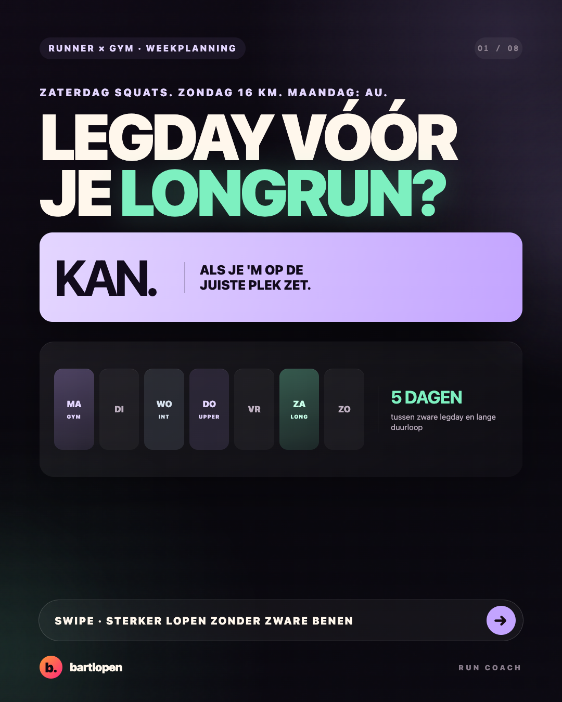
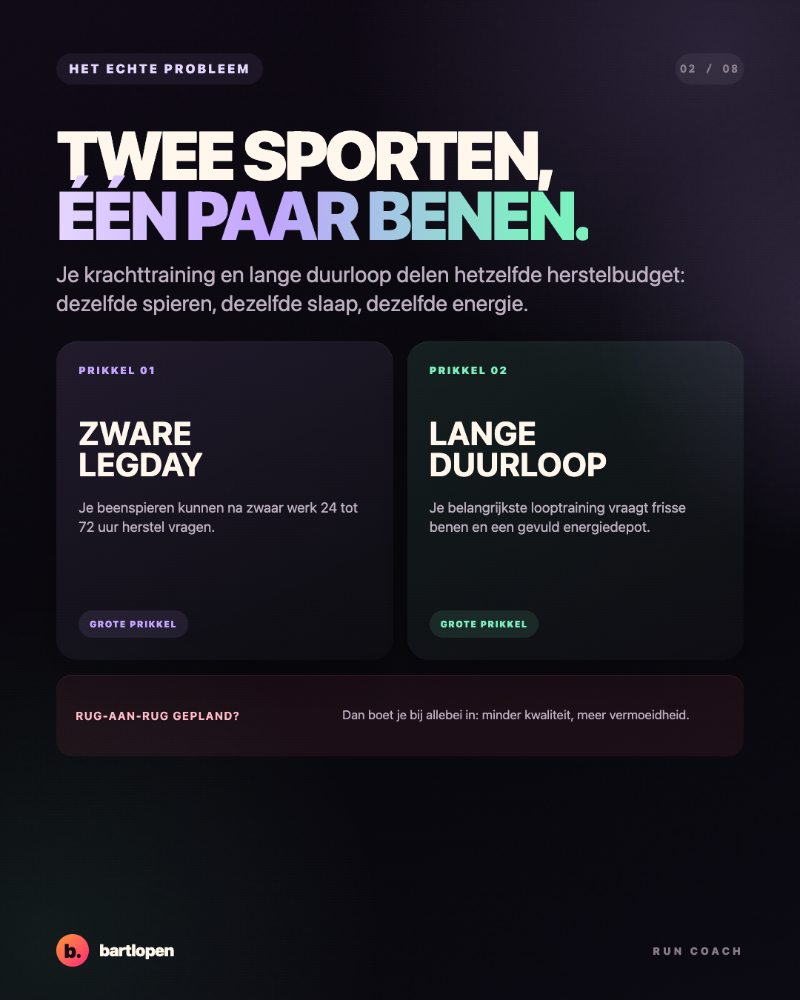
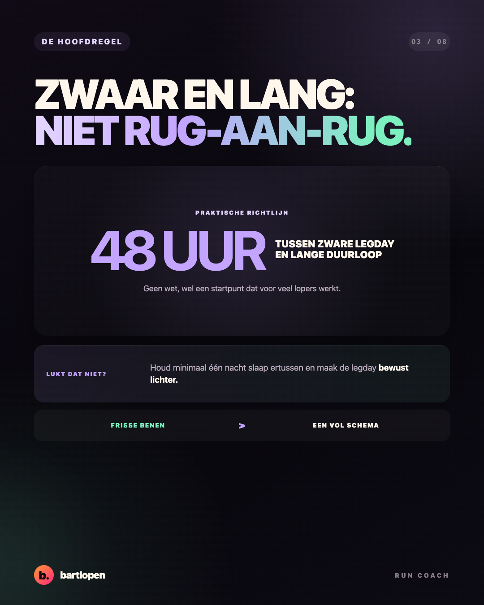
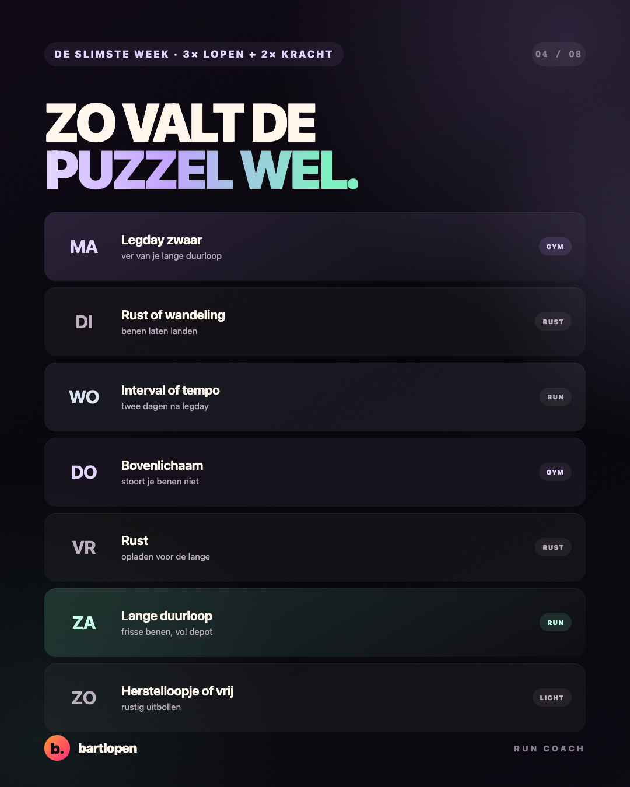
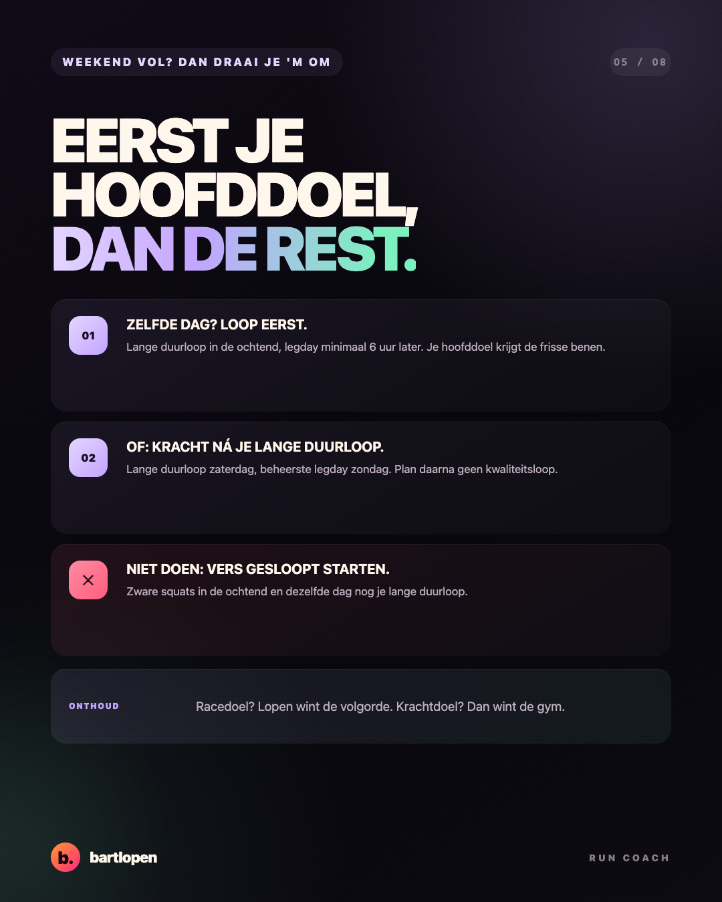
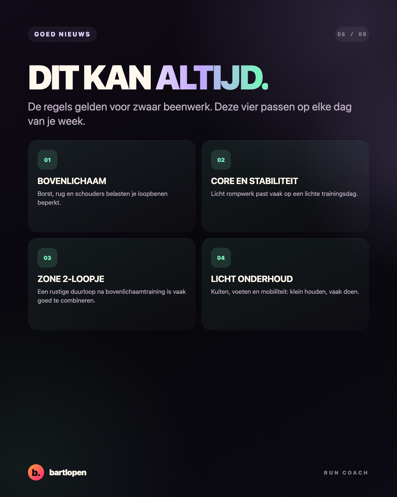
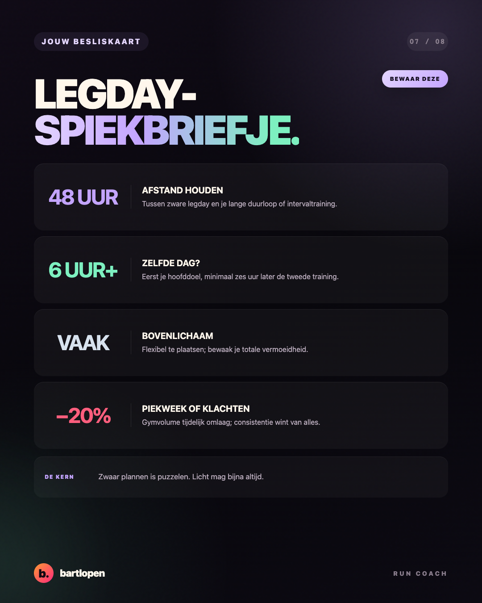
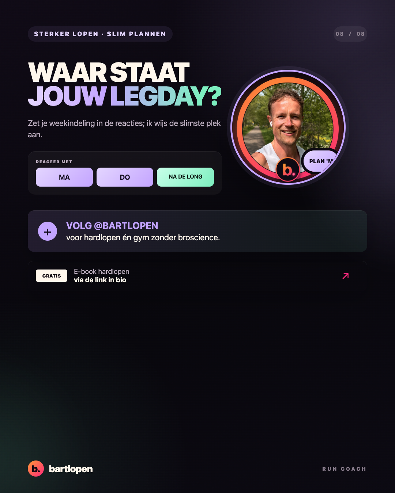

SLIDE 01 ↗Legday versus
longrun
Acht premium slides over zware beentraining, lange duurlopen en een weekindeling waarin beide trainingen kwaliteit houden. Gebouwd in 4:5-formaat voor Instagram en TikTok Photo Mode.

SLIDE 02 ↗
SLIDE 03 ↗
SLIDE 04 ↗
SLIDE 05 ↗
SLIDE 06 ↗
SLIDE 07 ↗
SLIDE 08 ↗Caption
ZATERDAG SQUATS. ZONDAG LONGRUN. MAANDAG: DE TRAP IS JE EINDBAAS. 🦵 Een zware beentraining en je lange duurloop passen prima in één week. Ze kunnen alleen niet allebei winnen op dezelfde dag. In deze carrousel: 🗓️ de 48-uursrichtlijn tussen zwaar beenwerk en je lange duurloop 🔁 een slimme weekindeling met 3 looptrainingen en 2 krachtsessies ⏱️ wat je doet als je weekend vol zit (draai de volgorde om) ✅ wat meestal flexibel past: bovenlichaam, lichte core en rustige loopjes Onthoud de kern: zwaar plannen is puzzelen, licht mag bijna altijd. En je hoofddoel krijgt de frisse benen. Zet je weekindeling in de reacties. Op welke dagen loop je en doe je krachttraining? Dan wijs ik de slimste plek voor je beentraining aan. 👇 Bewaar 'm voor je volgende trainingsweek. 📌 #hardlopen #krachttraining #hybridathlete #legday #longrun #runnersofinstagram #hardlopennederland #runcoach #bartlopen
De 48-uursafstand is een praktische startlijn, geen harde wet. Pas de planning aan op trainingszwaarte, spierpijn, slaap, ervaring en jouw belangrijkste sportdoel.